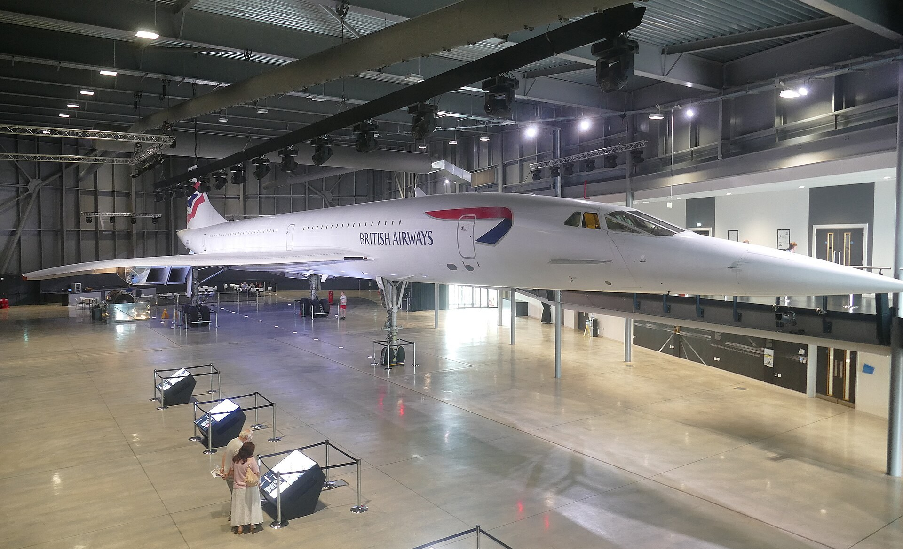
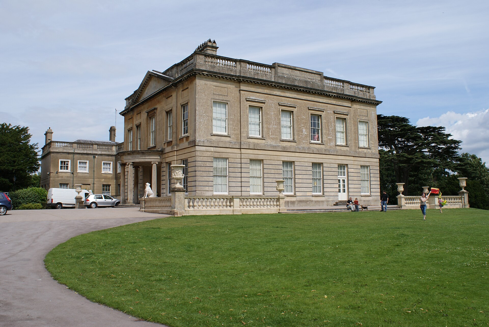
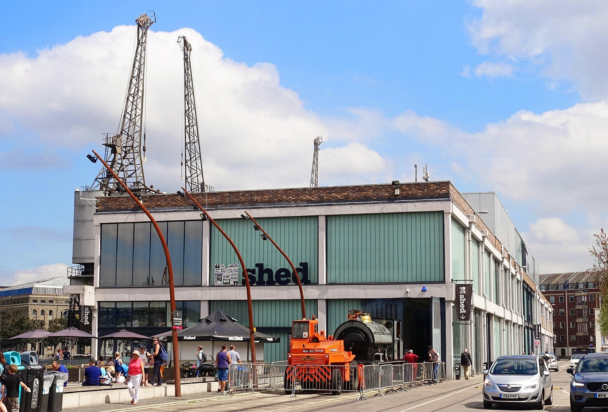
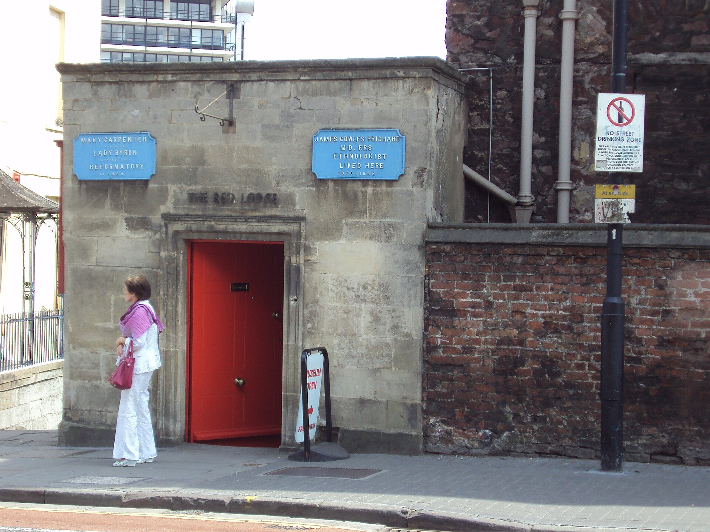

Big discoveries for curious minds
Museums
Explore local stories, historic houses and remarkable aircraft at family-friendly museums.
Explore placesBig discoveries for curious minds
Explore local stories, historic houses and remarkable aircraft at family-friendly museums.
Places to explore
5 places to discover

Museums
Bristol Museum & Art Gallery
Natural history, archaeology and art for a day of discoveries on Queens Road.


More smiles. Less spending.
Big memories. Little budgets.
Discover lovely family days out that don’t cost a fortune.
Explore free days out